Array Concatenation and Splitting
Master the art of joining multiple NumPy arrays together and dividing large datasets into meaningful chunks. Learn how axis=0 and axis=1 dictate shape transformations, explore intuitive helpers like vstack(), hstack(), and understand why np.stack() builds brand-new dimensions. Master np.split(), handle uneven splits with np.array_split(), and slice matrices like a seasoned Data Scientist!
00🎯 Learning Objectives
Is lesson ko complete karne ke baad aap in sabhi concepts me 100% confident ho jayenge:
- Why Arrays Need to be Combined: Real-world multi-sensor data, monthly sales reports, aur multi-class student marks ko merge karna.
- What Concatenation Means: Existing axis ke along arrays ko jodna bina extra dimension create kiye.
- np.concatenate() Mastery: Syntax, tuple requirements
(a, b), and default behavior. - The axis Parameter Explained: 2D array me
axis=0(rows add hona downward) vsaxis=1(columns add hona rightward). - vstack() & hstack(): Vertical aur horizontal stacking ke intuitive shortcuts aur shape rules.
- stack() vs concatenate(): Existing axis join vs New dimension creation ka critical difference.
- np.split(): Equal sections aur specific index boundaries (
[2, 5]) par array divide karna. - np.array_split(): Uneven splits ko perfectly handle karna bina kisi
ValueErrorke. - 2D Splitting:
vsplit()aurhsplit()se matrix ke rows aur columns alag karna. - Dataset Preparation & Best Practices: Machine Learning train/test partitioning me data leakage se bachna.
- Common Errors & Debugging: Shape mismatch, incompatible axes, aur out-of-bound cuts ko identify aur solve karna.
01🌐 Opening Hook — Combining & Dividing Real-World Data
Real-world Data Science projects me data kabhi bhi ek single, clean file me packaged nahi milta. Real-life scenarios sochiye:
- Two Class Sections: Class 10-A ke marks ek array me hain, aur Class 10-B ke marks dusre array me. Annual topper list nikalne ke liye aapko dono arrays ko aapas me combine karna padega.
- Weekly Sales Data: Week 1 ki sales
[1200, 1500, 1350]aur Week 2 ki sales[1600, 1450, 1800]alag-alag store servers se aati hain. Monthly consolidated report banane ke liye unhe ek sequence me merge karna hota hai. - Weather Station IoT Sensors: Temperature sensors har ghante readings bhejte hain. 24-ghante ke 10,000 readings ko hume 3 shifts (Morning, Evening, Night) me split karna hota hai.
- Machine Learning Dataset Partitioning: 1,000 customer records ko Training Set (80%) aur Test Set (20%) me divide karna padta hai.
1. Concatenation (Jodna): Do ya do se zyada arrays ko ek existing direction me jod kar ek bada array banana.
Array A (Size 3) + Array B (Size 3) → Combined Array (Size 6)
2. Splitting (Todna): Ek bade array ko logical boundaries ya equal parts me divide karke multiple chhote arrays banana.
Large Array (Size 6) → Chunk 1 (Size 2) + Chunk 2 (Size 2) + Chunk 3 (Size 2)
(N,) hoti hai jisme keval ek axis hoti hai (axis 0). 2D array ki shape (rows, columns) hoti hai jisme axis 0 row direction (vertical) hoti hai aur axis 1 column direction (horizontal) hoti hai!
02🔗 Section A — Understanding np.concatenate()
NumPy me arrays ko aapas me jodane ka sabse basic aur universal function hai np.concatenate().
result = np.concatenate((array1, array2, ...), axis=0)- Tuple of Arrays
(array1, array2): Pehla argument ek sequence (tuple ya list) hona chahiye. Agar aapnp.concatenate(a, b)likhenge toh error aayega! - axis: Kis axis ke along jodna hai. Default value
axis=0hoti hai. - Dimension Preservation: Concatenation se array ki dimensions (
ndim) change nahi hoti. 1D arrays combine hoke 1D hi rehte hain. - Order Preservation: Pehle array ke elements pehle aate hain, phir dusre ke. Original sequential order bilkul intact rehta hai.
Example 1: Combining Student Marks from Two Classes
Do alag classes ke students ke marks ko ek consolidated list me combine karte hain:
import numpy as np
# Class A aur Class B ke student marks (1D Arrays)
class_a = np.array([75, 82, 91])
class_b = np.array([68, 88, 95])
# Tuple ke form me arrays pass karke concatenate karein
combined = np.concatenate((class_a, class_b))
print("Combined Marks:", combined)
print("Combined Shape:", combined.shape)
print("Dimensions:", combined.ndim)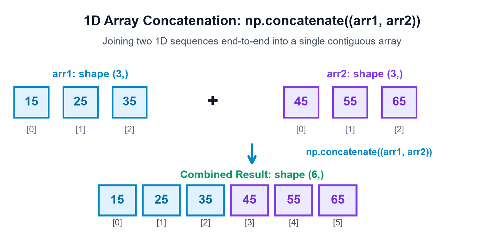
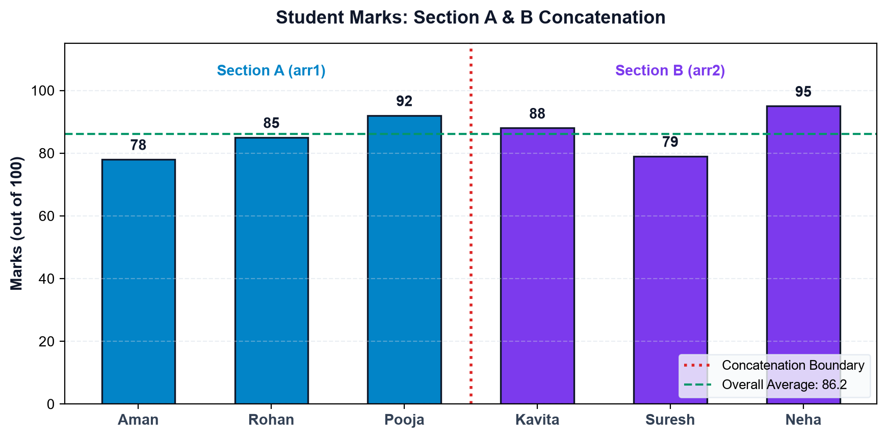
Example 2: Combining Weekly Sales Numbers
Ek retail store ke do weeks ki sales numbers ko combine karke 6-day trend analyze karte hain:
import numpy as np
week_1 = np.array([1200, 1500, 1350])
week_2 = np.array([1600, 1450, 1800])
monthly_sales = np.concatenate((week_1, week_2))
print("Consolidated Sales:", monthly_sales)
print("Total Revenue: ₹", np.sum(monthly_sales))
print("Average Daily Sale: ₹", np.mean(monthly_sales))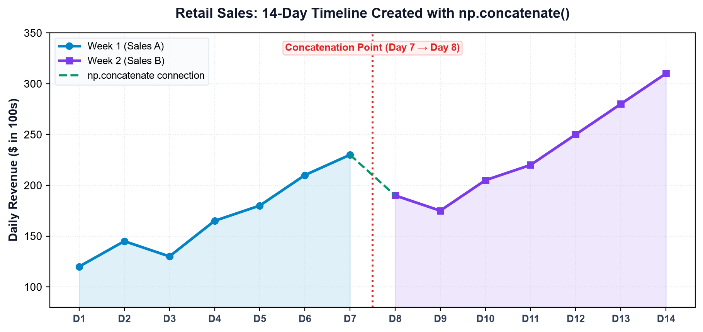
(3,)) aur output bhi 1D mila (shape (6,)). Original elements ka order exactly maintain raha — Week 1 pehle, aur Week 2 baad me.
03🧭 Section B — Understanding the axis Argument in 2D
Jab hum 2D matrices ke sath kaam karte hain, toh concatenation kis direction me hoga ye decide karta hai axis parameter. Beginners aksar isme confuse hote hain, lekin is simple mental model ko yaad rakhein:
| Axis Value | Direction | Kya Add Hota Hai? | Shape Transformation Rule |
|---|---|---|---|
axis=0 |
Vertical (Downwards ↓) | Nayi Rows judti hain | Row count badhega, Columns exact same hone chahiye! (R1+R2, C) |
axis=1 |
Horizontal (Rightwards →) | Naye Columns judte hain | Column count badhega, Rows exact same honi chahiye! (R, C1+C2) |
Example 1: Concatenating Rows (axis=0)
Array a me 2 rows hain aur b me 1 row hai. Dono me 2 columns hain. axis=0 par jodne par rows add hongi:
import numpy as np
a = np.array([
[1, 2],
[3, 4]
]) # Shape: (2, 2)
b = np.array([
[5, 6]
]) # Shape: (1, 2)
result = np.concatenate((a, b), axis=0)
print("Result Matrix (axis=0):\n", result)
print("Result Shape:", result.shape)Example 2: Concatenating Columns (axis=1)
Array a me 2 rows hain aur b me bhi 2 rows hain (1 column). axis=1 par jodne par naya column add hoga:
import numpy as np
a = np.array([
[1, 2],
[3, 4]
]) # Shape: (2, 2)
b = np.array([
[10],
[20]
]) # Shape: (2, 1)
result = np.concatenate((a, b), axis=1)
print("Result Matrix (axis=1):\n", result)
print("Result Shape:", result.shape)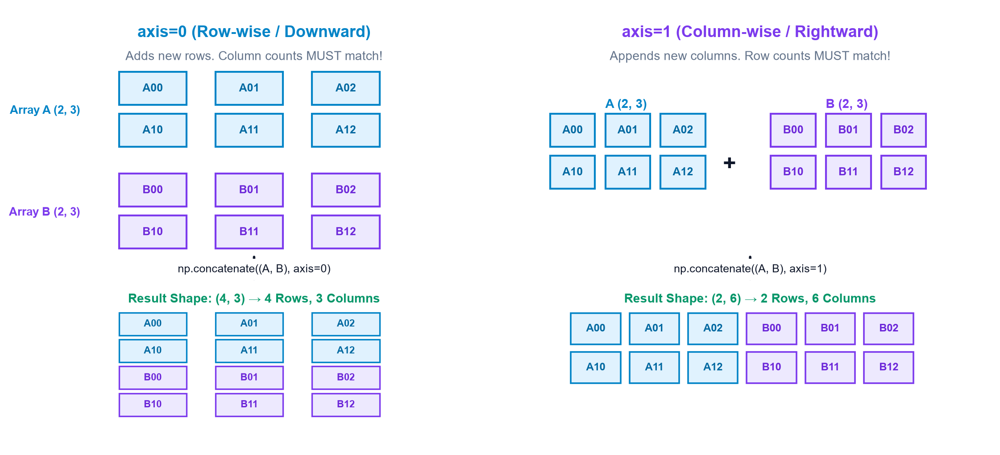
axis=0 par concatenate kar rahe hain toh column count same hona chahiye. Agar axis=1 par kar rahe hain toh row count match hona mandatory hai. Warna NumPy ValueError raise karega.
04🧱 Section C — Vertical & Horizontal Stacking (vstack & hstack)
Har baar axis=0 ya axis=1 yaad rakhne ke bajaye NumPy do super intuitive convenience functions provide karta hai:
np.vstack()(Vertical Stack): Arrays ko ek ke upar ek (vertically) stack karta hai (Row-wise stacking).np.hstack()(Horizontal Stack): Arrays ko side-by-side (horizontally) stack karta hai (Column-wise stacking).
Example 1: Vertical Stacking (np.vstack)
Do 1x3 row vectors ko vertically stack karke 2x3 matrix banate hain:
import numpy as np
top = np.array([[1, 2, 3]]) # Shape: (1, 3)
bottom = np.array([[4, 5, 6]]) # Shape: (1, 3)
result = np.vstack((top, bottom))
print("vstack Result:\n", result)
print("Result Shape:", result.shape)Example 2: Horizontal Stacking (np.hstack)
Do 3x1 column vectors ko horizontally stack karke 3x2 matrix banate hain:
import numpy as np
left = np.array([[1], [2], [3]]) # Shape: (3, 1)
right = np.array([[10], [20], [30]]) # Shape: (3, 1)
result = np.hstack((left, right))
print("hstack Result:\n", result)
print("Result Shape:", result.shape)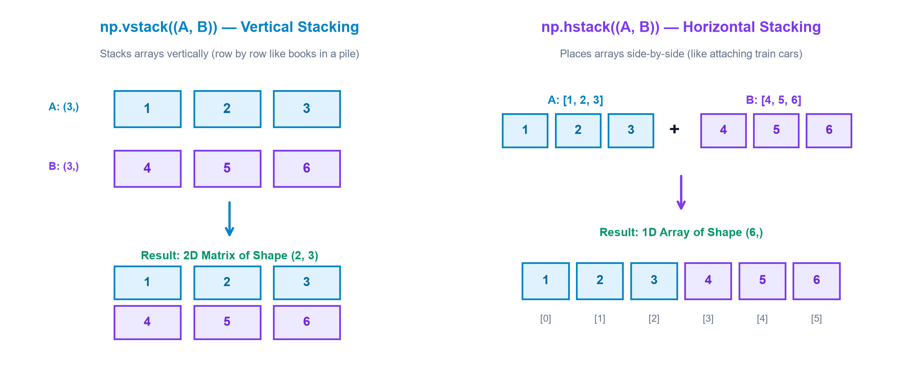
•
np.vstack((a, b)) jab 1D arrays (size N) par call hota hai, toh unhe 2D row vectors me promote karke vertically stack karta hai → Output Shape: (2, N).
•
np.hstack((a, b)) jab 1D arrays par call hota hai, toh wo standard 1D concatenation karta hai → Output Shape: (2N,).
05📦 Section D — stack() versus concatenate()
Ye NumPy ka sabse popular interview question hai: "What is the exact difference between np.concatenate and np.stack?"
np.concatenate(): Arrays ko unke EXISTING axis ke along jodta hai. Dimensions (ndim) change nahi hoti. (1D + 1D = 1D).np.stack(): Arrays ko ek BRAND NEW axis ke along combine karta hai! Dimensions badh jaati hain (1D + 1D = 2D matrix, 2D + 2D = 3D tensor).- Requirement:
np.stack()ke andar pass hone wale sabhi arrays ki shape 100% identical honi chahiye!
Example 1: Concatenating Two 1D Arrays (No New Dimension)
import numpy as np
a = np.array([1, 2, 3])
b = np.array([4, 5, 6])
result = np.concatenate((a, b))
print("Concatenate Result:", result)
print("Shape:", result.shape)
print("Dimensions (ndim):", result.ndim)Example 2: Stacking Two 1D Arrays (Creates a 2D Matrix)
import numpy as np
a = np.array([1, 2, 3])
b = np.array([4, 5, 6])
# axis=0 par stack karne se shape (2, 3) banegi
result_axis0 = np.stack((a, b), axis=0)
print("Stack (axis=0):\n", result_axis0)
print("Shape:", result_axis0.shape)
print("Dimensions (ndim):", result_axis0.ndim)
# axis=1 par stack karne se shape (3, 2) banegi
result_axis1 = np.stack((a, b), axis=1)
print("\nStack (axis=1):\n", result_axis1)
print("Shape:", result_axis1.shape)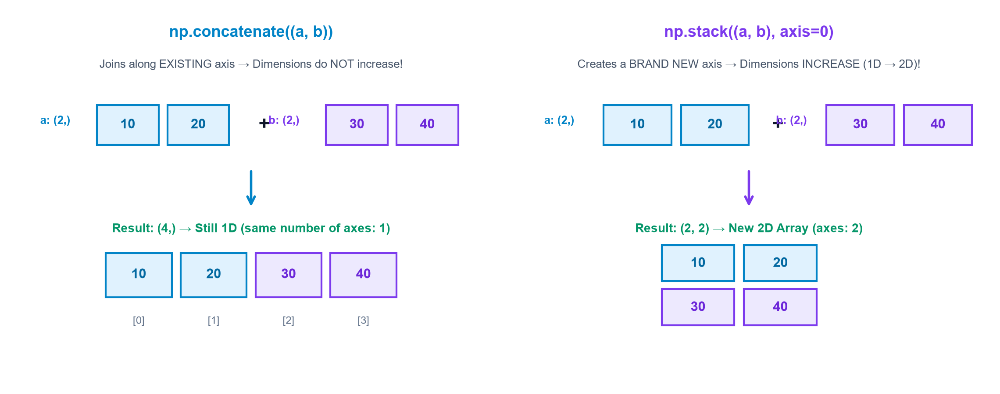
06✂️ Section E — Splitting Arrays with np.split()
Jab hume ek single array ko multiple smaller arrays me divide karna hota hai, tab hum use karte hain np.split().
- Equal Number of Sections (Integer N):
np.split(array, 3)→ Array ko 3 equal parts me divide karega. Total lengthNse perfectly divisible honi chahiye! - Custom Split Indices (List
[i1, i2, ...]):np.split(array, [2, 5])→ Specific index boundaries par cut lagayega:- Part 1:
array[:2](Index 0 se 1 tak) - Part 2:
array[2:5](Index 2 se 4 tak) - Part 3:
array[5:](Index 5 se end tak)
- Part 1:
Example 1: Equal Split into 3 Sections
6 sales values ko 3 barabar shifts (2 values each) me divide karte hain:
import numpy as np
sales = np.array([100, 120, 140, 160, 180, 200])
# 6 elements / 3 sections = 2 elements per section
parts = np.split(sales, 3)
for i, part in enumerate(parts, start=1):
print(f"Part {i}:", part, "| Shape:", part.shape)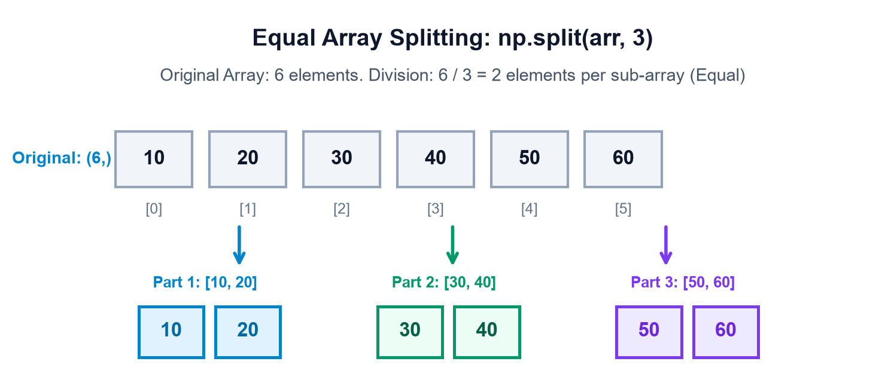
Example 2: Splitting at Specified Cut Positions [2, 5]
7-element array ko specific positions par cut karte hain:
import numpy as np
data = np.array([10, 20, 30, 40, 50, 60, 70])
# Cut at index 2 aur index 5
parts = np.split(data, [2, 5])
for i, part in enumerate(parts, start=1):
print(f"Part {i}:", part, "| Shape:", part.shape)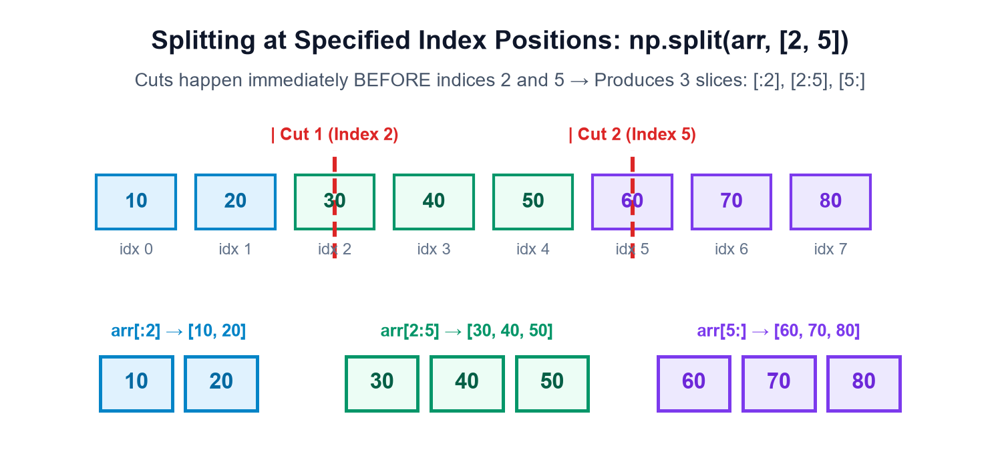
np.split(array, [2, 5]) me [2, 5] split positions hain, count nahi! Is cut se 3 arrays bante hain, 2 nahi!
07⚖️ Section F — array_split() for Uneven Divisions
Real-world me dataset size aksar requested section count se perfectly divisible nahi hota. Agar aap 7 elements ko 3 parts me np.split() se todne ki koshish karenge, toh crash ho jayega:
ValueError: array split does not result in an equal division
Is problem ka universal solution hai np.array_split()! Ye function values ko jitna ho sake evenly distribute karta hai, jisme section sizes me maximum 1 element ka difference hota hai.
Example 1: Splitting 7 Sensor Readings into 3 Sections
import numpy as np
readings = np.array([10, 20, 30, 40, 50, 60, 70])
# 7 elements cannot divide equally into 3. array_split gives [3, 2, 2]
parts = np.array_split(readings, 3)
for i, part in enumerate(parts, start=1):
print(f"Part {i}:", part, "| Length:", len(part))Example 2: Splitting 5 Sales Records into 2 Sections
import numpy as np
sales = np.array([100, 200, 300, 400, 500])
# 5 elements divide into sizes 3 and 2
parts = np.array_split(sales, 2)
for i, part in enumerate(parts, start=1):
print(f"Part {i}:", part, "| Length:", len(part))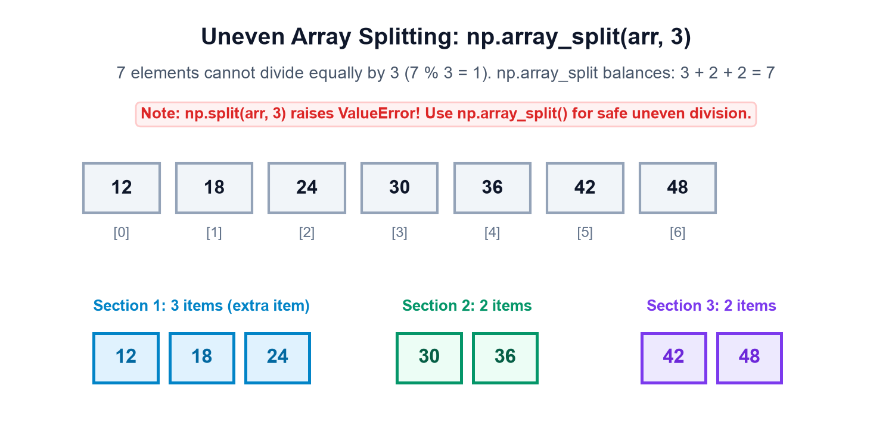
np.array_split() use karein taaki odd-length inputs par aapka code fail na ho!
08🗂️ Section G — Splitting 2D Arrays (vsplit & hsplit)
2D matrices ko split karne ke liye NumPy do intuitive helpers provide karta hai:
np.vsplit()(Vertical Split): Matrix ko horizontally cut karta hai rows ke beech me se (Row-wise split). Total rowsNse divisible honi chahiye.np.hsplit()(Horizontal Split): Matrix ko vertically cut karta hai columns ke beech me se (Column-wise split). Total columnsNse divisible hone chahiye.
Example 1: Vertical Split (np.vsplit) along Rows
Ek 4x2 matrix ko do 2x2 sub-matrices me split karte hain:
import numpy as np
matrix = np.array([
[1, 2],
[3, 4],
[5, 6],
[7, 8]
]) # Shape: (4, 2)
parts = np.vsplit(matrix, 2)
for i, part in enumerate(parts, start=1):
print(f"Sub-matrix {i} (Shape: {part.shape}):\n", part)Example 2: Horizontal Split (np.hsplit) along Columns
Ek 3x4 matrix ko do 3x2 sub-matrices me split karte hain:
import numpy as np
matrix = np.array([
[1, 2, 3, 4],
[5, 6, 7, 8],
[9, 10, 11, 12]
]) # Shape: (3, 4)
parts = np.hsplit(matrix, 2)
for i, part in enumerate(parts, start=1):
print(f"Sub-matrix {i} (Shape: {part.shape}):\n", part)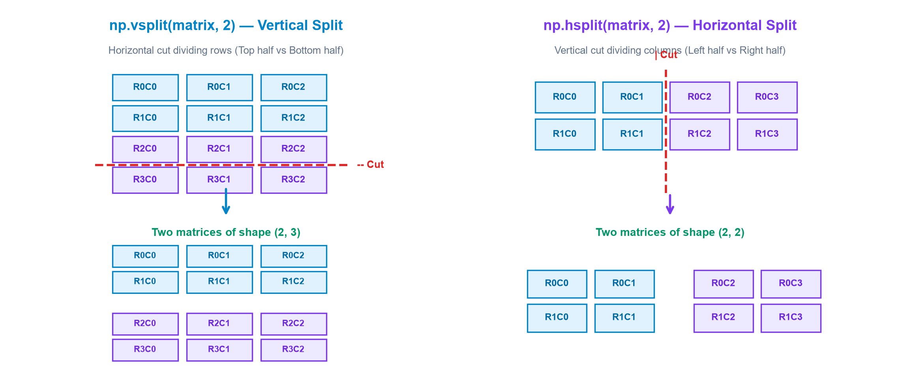
09🎛️ Section H — Using np.split() with the axis Argument
np.vsplit() aur np.hsplit() internally np.split() ko hi call karte hain with explicit axis parameter:
np.split(matrix, N, axis=0)↔np.vsplit(matrix, N)(Row split)np.split(matrix, N, axis=1)↔np.hsplit(matrix, N)(Column split)
Example 1: Split Along Rows (axis=0)
import numpy as np
matrix = np.array([
[1, 2],
[3, 4],
[5, 6],
[7, 8]
])
parts = np.split(matrix, 2, axis=0)
for i, part in enumerate(parts, start=1):
print(f"Part {i}:\n", part)Example 2: Split Along Columns (axis=1)
import numpy as np
matrix = np.array([
[1, 2, 3, 4],
[5, 6, 7, 8]
]) # Shape: (2, 4)
parts = np.split(matrix, 2, axis=1)
for i, part in enumerate(parts, start=1):
print(f"Part {i}:\n", part)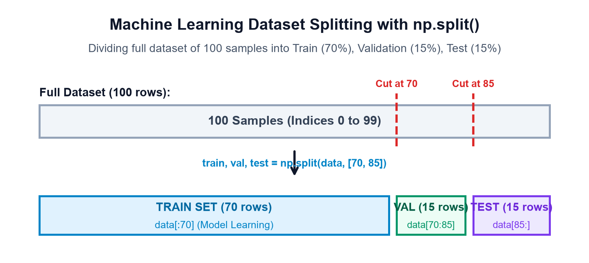
10🚨 Section I — Common Mistakes & How to Prevent Them
Concatenation aur splitting me aane wali 10 sabse common galtiyan aur unke verified fixes:
Buggy Assumption: Do matrices ko concatenate karte waqt non-concatenating dimension mismatch hona.
# BUGGY:
a = np.ones((2, 3))
b = np.ones((2, 4))
np.concatenate((a, b), axis=0)
# ValueError: all the input array dimensions except for the concatenation axis must match exactly!Fix: Axis 0 ke along concatenate karte waqt column count exact same (3 aur 3) hona chahiye. Agar columns alag hain aur rows same hain, toh axis=1 use karein!
# VERIFIED FIX:
res = np.concatenate((a, b), axis=1) # Shape becomes (2, 7)Buggy Code: np.concatenate(a, b) likhna bina tuple ke.
Issue: b ko NumPy second argument (axis) samajh leta hai aur crash karta hai: TypeError: only integer scalar arrays can be converted to a scalar index.
Fix: Hamesha double brackets ya tuple use karein: np.concatenate((a, b)).
Buggy Code: np.split(np.arange(7), 3)
Actual Error: ValueError: array split does not result in an equal division.
Fix: Agar length perfectly divisible nahi hai, toh np.array_split(np.arange(7), 3) use karein jo [3, 2, 2] chunks dega.
Buggy Assumption: np.split(data, 2) aur np.split(data, [2]) dono 2 parts dete hain lekin cut positions different hoti hain.
Explanation: Integer 2 array ko beech se 2 equal halves me divide karta hai. Jabki list [2] index 2 par cut lagata hai (pehle 2 elements alag, baki sab alag)!
Buggy Code: np.stack((np.arange(3), np.arange(4)))
Actual Error: ValueError: all input arrays must have the same shape.
Fix: np.stack ke andar aane wale sabhi arrays ki shape 100% identical honi chahiye.
Explanation: 1D arrays par vstack unhe 2D matrix (shape (2, N)) bana deta hai, jabki hstack unhe 1D array hi rakhta hai (shape (2N,)).
Buggy Code: np.vsplit(np.array([1, 2, 3, 4]), 2)
Actual Error: ValueError: vsplit only works on arrays of 2 or more dimensions.
Fix: 1D arrays ke liye np.split() use karein, ya pehle array ko reshape(2, 2) karein.
Issue: Beginners sochte hain ki parts = np.split(arr, 3) ek single 2D array return karega.
Fact: parts ek standard Python list hoti hai jiske andar separate np.ndarray elements hote hain: type(parts) == list.
Buggy Code: 3x4 matrix ko np.split(matrix, 2, axis=0) karna.
Issue: Matrix me 3 rows hain jo 2 parts me barabar nahi toot sakti. Axis 1 (4 columns) par axis=1 split chalega kyunki 4/2 = 2.
Buggy Code: np.concatenate((arr1d_a, arr1d_b), axis=1)
Actual Error: AxisError: axis 1 is out of bounds for array of dimension 1.
Fix: 1D array me keval axis=0 hoti hai. Agar columns banana chahte hain, toh np.column_stack((a, b)) use karein!
11🌍 Section J — Real-Life Data Science Applications
Concatenation aur splitting industry-grade Data Science pipelines ki foundation hain:
Dono sections (Section A aur Section B) ke Midterm marks ko np.concatenate se joda jata hai, phir toppers identify karne ke baad np.array_split se remedial coaching batches me divide kiya jata hai.
Daily cash register logs alag-alag branch servers se collect hoti hain. Unhe np.vstack se consolidate kiya jata hai aur quarterly audits ke liye np.hsplit se revenue, taxes, aur discounts ke columns alag kiye jate hain.
Weather station ke million readings stream hokar aate hain. Memory overflow se bachne ke liye np.array_split se 1,000-sample batches (mini-batches) banakar parallel processing worker nodes ko bheje jate hain.
Features matrix $X$ aur labels vector $y$ ko train (80%) aur test (20%) sets me split kiya jata hai. Important Best Practice: Time-series data me random shuffling ke bajaye sequential split kiya jata hai taaki future data past me leak na ho (Data Leakage Prevention)!
Ek high-resolution satellite image ($1024 \times 1024$ pixels) ko neural network model me feed karne ke liye np.vsplit aur np.hsplit se $256 \times 256$ tiles (patches) me divide kiya jata hai.
12✍️ Section K — Practice Exercises & Challenges
A. Predict the Output (10 Questions)
Code dekhiye, pehle mann me output guess karein, phir verify karein:
Q1: 1D Concatenation Shape
a = np.array([1, 2]); b = np.array([3, 4, 5])
print(np.concatenate((a, b)).shape)Answer: (5,). 1D arrays combine hoke 1D hi rehte hain with total size 2 + 3 = 5.
Q2: Concatenate along axis=0
a = np.ones((2, 3)); b = np.zeros((1, 3))
print(np.concatenate((a, b), axis=0).shape)Answer: (3, 3). Rows add hongi (2 + 1 = 3), columns 3 hi rahenge.
Q3: Concatenate along axis=1
a = np.ones((2, 3)); b = np.zeros((2, 2))
print(np.concatenate((a, b), axis=1).shape)Answer: (2, 5). Columns add honge (3 + 2 = 5), rows 2 hi rahengi.
Q4: vstack on 1D arrays
a = np.array([1, 2, 3]); b = np.array([4, 5, 6])
print(np.vstack((a, b)).shape)Answer: (2, 3). vstack 1D arrays ko 2D rows bana kar stack karta hai.
Q5: hstack on 1D arrays
a = np.array([1, 2, 3]); b = np.array([4, 5, 6])
print(np.hstack((a, b)).shape)Answer: (6,). hstack 1D arrays par standard flat concatenation karta hai.
Q6: np.stack dimensions
a = np.array([1, 2]); b = np.array([3, 4])
print(np.stack((a, b)).ndim)Answer: 2. stack() brand new axis banata hai, isliye 1D arrays se 2D matrix banta hai.
Q7: Equal split parts count
data = np.arange(12)
parts = np.split(data, 4)
print(len(parts), parts[0].shape)Answer: 4, (3,). 12 elements 4 barabar tukdo me divide honge (3 elements each).
Q8: Split with indices [2, 6]
data = np.arange(10)
parts = np.split(data, [2, 6])
print([len(p) for p in parts])Answer: [2, 4, 4]. Slices: [:2] length 2, [2:6] length 4, [6:] length 4.
Q9: array_split with odd count
data = np.arange(8)
parts = np.array_split(data, 3)
print([len(p) for p in parts])Answer: [3, 3, 2]. 8 elements 3 parts me divide hoke 3, 3, 2 sizes banate hain.
Q10: vsplit on 4x3 matrix
matrix = np.ones((4, 3))
parts = np.vsplit(matrix, 2)
print(parts[0].shape)Answer: (2, 3). 4 rows 2 barabar parts me divide hokar 2 rows per sub-matrix dengi.
B. Write the Code (8 Exercises)
Exercise 1: Combine Marks from Two Classes
Task: Class 1 marks [75, 82, 89] aur Class 2 marks [65, 78, 92] ko concatenate karein.
c1 = np.array([75, 82, 89])
c2 = np.array([65, 78, 92])
combined = np.concatenate((c1, c2))
print(combined) # [75 82 89 65 78 92]Exercise 2: Combine Weekly Sales Arrays
Task: Week 1 [120, 150, 180] aur Week 2 [200, 210, 220] ko merge karke total average nikaalein.
w1 = np.array([120, 150, 180])
w2 = np.array([200, 210, 220])
sales = np.concatenate((w1, w2))
print("Average:", np.mean(sales))Exercise 3: Concatenate Two Matrices Along Rows
Task: Do 2x2 matrices ko vertically join karein using axis=0.
m1 = np.array([[1, 2], [3, 4]])
m2 = np.array([[5, 6], [7, 8]])
res = np.concatenate((m1, m2), axis=0)
print(res.shape) # (4, 2)Exercise 4: Concatenate Two Matrices Along Columns
Task: Do 2x2 matrices ko horizontally join karein using axis=1.
res = np.concatenate((m1, m2), axis=1)
print(res.shape) # (2, 4)Exercise 5: Use vstack and hstack on Same Inputs
Task: Verify karein ki vstack aur hstack identical results dete hain.
assert np.array_equal(np.vstack((m1, m2)), np.concatenate((m1, m2), axis=0))
assert np.array_equal(np.hstack((m1, m2)), np.concatenate((m1, m2), axis=1))Exercise 6: Split Eight Values into Four Equal Sections
Task: 8 values ko 4 parts me divide karein.
vals = np.arange(10, 90, 10)
parts = np.split(vals, 4)
for p in parts: print(p)Exercise 7: Divide Seven Values into Three Nearly Equal Sections
Task: 7 values ko bina error 3 sections me baantein.
vals = np.arange(1, 8)
parts = np.array_split(vals, 3)
print([len(p) for p in parts]) # [3, 2, 2]Exercise 8: Split a 4x4 Matrix into Row and Column Blocks
Task: 4x4 matrix ko 2 horizontal aur 2 vertical halves me divide karein.
mat = np.arange(16).reshape(4, 4)
row_halves = np.vsplit(mat, 2)
col_halves = np.hsplit(mat, 2)
print("Row halves shapes:", [h.shape for h in row_halves]) # [(2, 4), (2, 4)]
print("Col halves shapes:", [h.shape for h in col_halves]) # [(4, 2), (4, 2)]C. Debugging Challenges (6 Exercises)
Challenge 1: Fixing 1D axis=1 Crash
Buggy Code: np.concatenate((a, b), axis=1) on 1D arrays.
Fix: np.column_stack((a, b)) or np.concatenate((a[:, None], b[:, None]), axis=1).
Challenge 2: Fixing Incompatible Matrix Concatenation
Buggy Code: np.concatenate((np.ones((2, 3)), np.ones((3, 4))), axis=0).
Fix: Non-concatenating dimension (columns) must match. Change second matrix to np.ones((3, 3)).
Challenge 3: Fixing np.split Unequal Division
Buggy Code: np.split(np.arange(5), 2) throws ValueError.
Fix: Use np.array_split(np.arange(5), 2) which yields parts of size 3 and 2.
Challenge 4: Missing Tuple Parentheses
Buggy Code: np.concatenate(a, b)
Fix: Wrap inputs inside a tuple: np.concatenate((a, b)).
Challenge 5: Negative Split Index
Task: Take first 3 elements and remaining elements.
Fix: np.split(data, [3]) produces data[:3] and data[3:] cleanly.
Challenge 6: vsplit on 1D Array Crash
Buggy Code: np.vsplit(np.arange(4), 2).
Fix: Reshape to 2D first: np.vsplit(np.arange(4).reshape(2, 2), 2).
D. Multiple Choice Questions (8 Questions)
Q1: What is the default axis for np.concatenate()?
A) axis=1 B) axis=0 C) axis=-1 D) None
Correct Answer: B) axis=0. Default behavior is to concatenate along the first existing axis.
Q2: How does np.stack() differ from np.concatenate()?
A) stack creates a new axis, concatenate joins along existing axis
B) concatenate is faster
C) stack works only on 1D arrays
D) There is no difference
Correct Answer: A. stack() creates a brand new dimension!
Q3: If array A has shape (3, 4) and array B has shape (3, 2), which concatenation is valid?
A) axis=0 B) axis=1 C) Both D) Neither
Correct Answer: B) axis=1. Rows match (3 == 3), so horizontal extension along columns is valid.
Q4: What happens if you run np.split(np.arange(10), 3)?
A) Returns 3 arrays of 3 elements
B) Returns [4, 3, 3]
C) Raises ValueError
D) Drops the 10th element
Correct Answer: C) Raises ValueError. 10 is not equally divisible by 3.
Q5: Which function safely handles uneven array divisions?
A) np.split B) np.array_split C) np.vsplit D) np.hsplit
Correct Answer: B) np.array_split.
Q6: What is np.vsplit(matrix, 2) equivalent to?
A) np.split(matrix, 2, axis=0)
B) np.split(matrix, 2, axis=1)
C) np.hstack((matrix, matrix))
D) np.stack((matrix, matrix))
Correct Answer: A) np.split(matrix, 2, axis=0).
Q7: What is the return type of np.split()?
A) NumPy ndarray B) Python list C) Python tuple D) Generator
Correct Answer: B) Python list of ndarrays.
Q8: What is the output shape of np.vstack((np.array([1, 2]), np.array([3, 4])))?
A) (4,) B) (2, 2) C) (1, 4) D) (4, 1)
Correct Answer: B) (2, 2). vstack promotes 1D arrays to 2D rows.
E. Real-Life Mini-Challenges (3 Scenarios)
np.split se do batches me divide karein.
np.vstack karke ek monthly matrix banayein, aur phir np.hsplit se Weekdays vs Weekend sales alag karein.
np.array_split se divide karein aur har worker chunk ka size print karein.
13🚀 Section L — Final Mini-Project: Student Marks Merger & Data Splitter
Ab humne jitne bhi concepts seekhe hain — np.concatenate, axis=0/1, vstack, hstack, stack, split, aur array_split — sabhi ko ek complete, real-world educational data pipeline me integrate karenge!
import numpy as np
print("=== STUDENT MARKS MERGER & DATA SPLITTER PIPELINE ===")
# 1. Raw Student Marks from Two Exam Groups
group_a_theory = np.array([78, 85, 92, 88])
group_b_theory = np.array([74, 90, 82, 95])
group_a_practical = np.array([82, 88, 90, 85])
group_b_practical = np.array([79, 92, 86, 91])
# 2. 1D Concatenation for All Theory Scores
all_theory = np.concatenate((group_a_theory, group_b_theory))
print("\n1. Consolidated Theory Scores:", all_theory)
print(" Shape:", all_theory.shape)
# 3. 2D Matrices via column_stack & vstack
group_a_matrix = np.column_stack((group_a_theory, group_a_practical))
group_b_matrix = np.column_stack((group_b_theory, group_b_practical))
# Vertically combine all students (axis=0 / vstack)
full_student_matrix = np.vstack((group_a_matrix, group_b_matrix))
print("\n2. Combined Performance Matrix (8 Students x 2 Subjects):\n", full_student_matrix)
# 4. Horizontally combine Project Marks (axis=1 / hstack)
project_scores = np.array([[88], [92], [79], [85], [90], [87], [94], [83]])
complete_report = np.hstack((full_student_matrix, project_scores))
print("\n3. Full Consolidated Report (Theory, Practical, Project):\n", complete_report)
print(" Report Shape:", complete_report.shape)
# 5. Equal Semester Splitting (np.split axis=0)
sem1, sem2 = np.split(complete_report, 2, axis=0)
print("\n4. Equal Division into 2 Semesters (4 Students Each):")
print(" Sem 1 Shape:", sem1.shape, "| Sem 2 Shape:", sem2.shape)
# 6. Uneven Exam Hall Allocation (np.array_split for 3 halls)
exam_halls = np.array_split(complete_report, 3, axis=0)
print("\n5. Uneven Exam Hall Allocation (3 Halls):")
for idx, hall in enumerate(exam_halls, start=1):
print(f" Hall {idx} Capacity: {hall.shape[0]} students | Shape: {hall.shape}")
# 7. Feature Splitting (Separate Exam Marks from Project Marks)
exam_subjects, final_project = np.hsplit(complete_report, [2])
print("\n6. Features Separation:")
print(" Exam Subjects Shape:", exam_subjects.shape)
print(" Final Project Shape:", final_project.shape)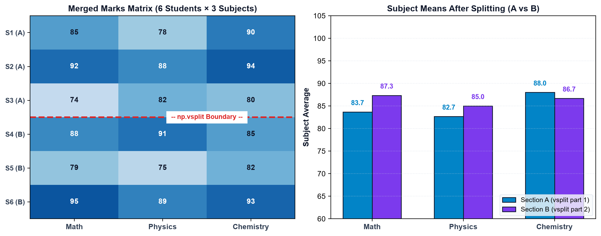
Two Extension Challenges:
- Challenge 1:
np.stackuse karke Group A aur Group B ko ek 3D tensor me combine karein (shape:(2, 4, 2)) jisme dimension 0 groups ko represent kare. - Challenge 2: Student performance report me se top 25% scorers ko
np.array_splitse extract karke Dean's Honor Roll list generate karein.
14📑 Section M — Quick Reference Cheat Sheet & Checklist
NumPy Concatenation aur Splitting operations ka comprehensive quick lookup table:
| Operation | Function Syntax | Axis / Direction | Output Dimensions | Key Constraint / Note |
|---|---|---|---|---|
| General Concatenation | np.concatenate((a, b), axis=0) |
Along specified axis | Same as inputs (ndim unchanged) | Non-concatenating axes must match exactly |
| Vertical Stacking | np.vstack((a, b)) |
Along rows (vertical ↓) | 2D (promotes 1D to 2D) | Number of columns must match |
| Horizontal Stacking | np.hstack((a, b)) |
Along columns (horizontal →) | Same (1D remains 1D) | Number of rows must match in 2D |
| New-Axis Stacking | np.stack((a, b), axis=0) |
Creates a NEW axis | ndim + 1 (Increases dimension) |
All input arrays must have identical shapes |
| Equal Splitting | np.split(arr, N) |
Default axis=0 | List of N ndarrays | Array length must divide equally by N |
| Index-based Splitting | np.split(arr, [idx1, idx2]) |
Specified cut points | List of len(indices)+1 ndarrays | Slices [:idx1], [idx1:idx2], [idx2:] |
| Uneven Splitting | np.array_split(arr, N) |
Safe balanced split | List of N ndarrays | Never raises ValueError; sizes differ by ≤ 1 |
| Vertical Split (2D) | np.vsplit(matrix, N) |
Row-wise (axis=0) | List of sub-matrices | Matrix rows must divide equally by N |
| Horizontal Split (2D) | np.hsplit(matrix, N) |
Column-wise (axis=1) | List of sub-matrices | Matrix columns must divide equally by N |
- Do arrays ko
np.concatenate((a, b))se jodna samajh aa gaya. - 2D me
axis=0(rows extend) auraxis=1(columns extend) ka difference clear hai. -
vstack()aurhstack()ke use cases aur 1D behavior samajh gaye. -
stack()(new dimension) vsconcatenate()(existing dimension) ka difference explain kar sakte hain. -
np.split()se equal aur index-based divisions karna aata hai. - Odd length arrays ke liye
np.array_split()use karna seekh liya. - 2D matrices ko
vsplit()aurhsplit()se divide kar sakte hain. - Real-world student marks merger mini-project run karke verify kar liya.